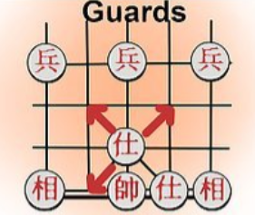

1. The General

The General is the most important piece on the board. It is like a king, where once the king is dead,
you lose the game. Similarly, the aim of the goal is to take the enemy's general down. The General
moves one position at a time, horizontally or vertically, but is restricted to moving within The Palace.
Black General is represented using '将' and Red General '帅' or '帥'
2. The Guards / Advisors
The guards can only move diagonally one position at a time, but cannot leave The Palace. There are
two advisors, one on each side of the general.